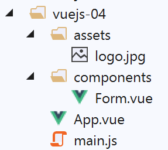
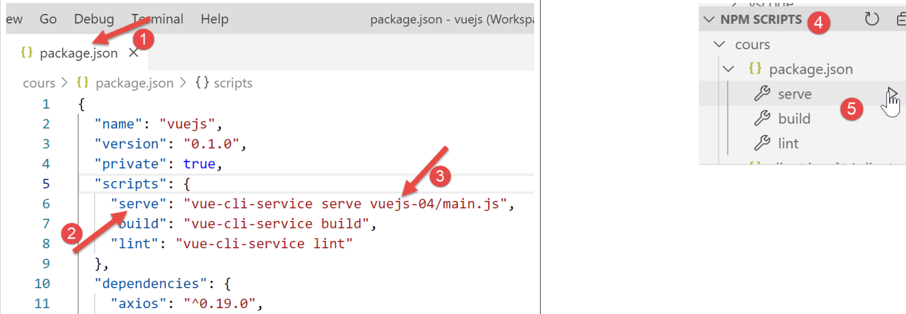

6. 项目 [vuejs-04]：指令 [v-model, v-bind]、计算属性、表单输入
[vuejs-04] 项目的目录结构如下：

6.1. 主脚本 [main.js]
与前面的示例相同。
6.2. 主组件 [App]
[App.vue] 的代码如下：
<template>
<b-container>
<b-card>
<!-- message de présentation -->
<b-row>
<b-col cols="8">
<b-alert show variant="success" align="center">
<h4>[vuejs-04] : directives [v-model, v-bind], attributs calculés, formulaire de saisie</h4>
</b-alert>
</b-col>
</b-row>
<Form />
</b-card>
</b-container>
</template>
<script>
import Form from "./components/Form.vue";
export default {
name: "app",
components: {
Form
}
};
</script>
[App.vue] 组件使用了新的 [Form] 组件（第 12、19、24 行）。
6.3. [Form] 组件
[Form] 组件的代码如下：
<template>
<div>
<!-- form -->
<b-form>
<!-- form elements -->
<b-row>
<b-col cols="4">
<b-card bg-variant="light">
<b-form-group label="Nombre d'enfants à charge" label-for="enfants">
<b-input type="text"
id="enfants"
placeholder="Indiquez votre nombre d'enfants"
v-model="enfants"
v-bind:state="enfantsValide" />
<b-form-invalid-feedback :state="enfantsValide">Vous devez saisir un nombre positif ou nul</b-form-invalid-feedback>
</b-form-group>
<!-- button -->
<b-button variant="primary" :disabled="formInvalide" @click="doSomething">Valider</b-button>
</b-card>
</b-col>
</b-row>
</b-form>
<b-row class="mt-3">
<b-col cols="4">
<b-alert show variant="warning" align="center">
<h4>enfants= {{enfants}}</h4>
</b-alert>
</b-col>
</b-row>
</div>
</template>
<!-- script -->
<script>
export default {
// nom
name: "Form",
// attributs statiques du composant
data() {
return {
// nbre d'enfants
enfants: ""
};
},
// attributs calculés
computed: {
// attribut [formInvalide]
formInvalide() {
return !this.enfantsValide;
},
// attribut [enfantsInvalide]
enfantsValide() {
return Boolean(this.enfants.match(/^\s*\d+\s*$/));
}
},
// méthodes
methods: {
doSomething() {
// le nbre d'enfants est connu lorsque la validation a lieu
alert("Nombre d'enfants : " + this.enfants);
}
}
};
</script>
可视化输出


注释
- 第 4–32 行：<b-form> 标签引入了一个 Bootstrap 表单；
- 第 6 行：<b-row> 标签定义了表单中的一行；
- 第 7 行：<b-col cols=’4’> 标签定义了一个横跨 4 个 Bootstrap 列的列；
- 第 8 行：<b-card> 标签 [6] 引入了一个 Bootstrap 卡片，即一个带有边框的区域；
- 第 9 行：<b-form-group> 标签添加了一组相互关联的表单元素。在此，一个标签（[label] 属性）[1] 与一个输入字段（[label-for] 属性）相关联。[label-for] 的值即为该输入字段的 [id] 字段（第 12 行）的值；
- 第 10–14 行：<b-input> 标签 [2] 引入了一个输入字段：
- 第 10 行：[type='text'] 表示可以在输入框中输入文本。鉴于我们预期会有多个子元素，本可以使用 [type='number'] 并配合 [min='val1' max='val2' step='val3'] 进行限制。我们使用 [type='text'] 是为了演示如何验证输入内容；
- 第 12 行：[placeholder] 属性 [3] 设置了在用户输入内容之前输入框中显示的提示信息；
- 第 13 行：[v-model] 指令将输入的值与组件第 42 行的 [children] 属性进行双向绑定：
- 当输入值发生变化时，[children] 属性的值也会随之改变；
- 当 [children] 属性的值发生变化时，输入的值也会随之变化，即 [2] 的内容发生变化；
- 需要理解的关键点是：得益于上述机制，当用户点击 [Validate] 按钮 [5] 时，第 42 行中的 [children] 属性将取 [2] 中输入的值；
- 第 14 行：[v-bind] 指令在 <b-input> 标签的某个属性（此处为 [state] 属性）与组件的某个属性（此处为第 53 行的 [enfantsValide]）之间建立了绑定。[enfantsValide] 属性的独特之处在于，它是一个返回该属性值的函数。此类属性被称为计算属性。 计算属性位于组件第 47 行的 [computed] 属性中。计算属性的使用方式与 [data] 属性的静态属性相同：在第 14 行，我们不写 [v-bind:state=’enfantsValide()’]，而是写 [v-bind:state=’enfantsValide’]，不带圆括号。 因此，仅通过阅读 [template] 部分，无法区分计算属性与静态属性。要进行区分，必须查看组件的脚本代码；
- 第 14 行：[state] 属性用于设置输入值的有效/无效状态：若 [enfantsValide] 返回 [true]，则输入值被视为有效；否则视为无效。上图截图展示了当 [enfantsValide] 函数返回 [false] 时 [b-input] 组件的状态；
- 第 15 行：<b-form-invalid-feedback> 标签 [4] 在 [2] 处的输入无效时显示一条消息。其属性 [:state='childrenValid'] 与第 15 行中的 [v-bind:state='childrenValid'] 属性完全相同。[v-bind] 指令可以省略，但必须保留 [:] 符号。 因此，当 [childrenValid] 属性为 [false] 时，将显示错误消息；
- 第 16 行：<b-group> 元素组的结束；
- 第 18 行：用于验证输入的 [5] 按钮：
- 该按钮将显示为蓝色 [variant='primary']；
- [:disabled="formInvalide"]: [disabled] 属性用于启用或禁用该按钮。该属性通过 v-bind 绑定至第 49 行的计算属性 [formInvalide]；
- [@click="doSomething"]: 当用户点击按钮时，第 59 行中的 [doSomething] 方法将被执行；
- 第 19–22 行：关闭各种未闭合的标签；
- 第 23–29 行：[template] 中的新行。[class=’mt-3’] 表示 [顶部 (t) 边距 (m) 为 3 个间隔符]。[spacer] 是 Bootstrap 的间距单位。该类在上述截图中创建了区域 [8]。若无此类，区域 [7] 将与区域 [1-6] 齐平；
- 第 24 行：一个横跨 4 个 Bootstrap 列的区域；
- 第 25–27 行：一个 [warning] 提示框，用于显示静态 [children] 属性的值（第 42 行）。由于该属性与输入字段建立了双向绑定，因此一旦用户修改该字段，提示框中显示的值也会随之变化；
- 第 34–65 行：组件的 JavaScript 代码；
- 第 42 行：组件的唯一静态属性；
- 第 47–56 行：组件的计算属性；
- 第 53–55 行：若输入为正整数（可选地在前后带有空格），则该输入被视为有效；
- 第 49–51 行：若输入的子项数量有效，则表单被视为有效。通常，表单包含多个字段，当所有字段均有效时，表单才被视为有效；
- 第 58–63 行：组件用于响应其事件的方法。这里只有一个事件：按钮的 [click] 事件。我们只需显示输入的值，以证明我们可以访问该值；
6.4. 运行项目
我们修改 [package.json] 文件并运行项目：
